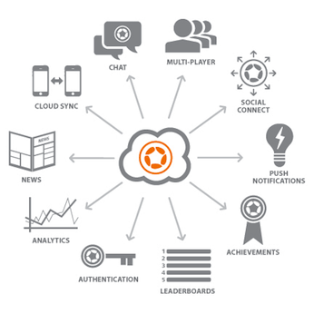
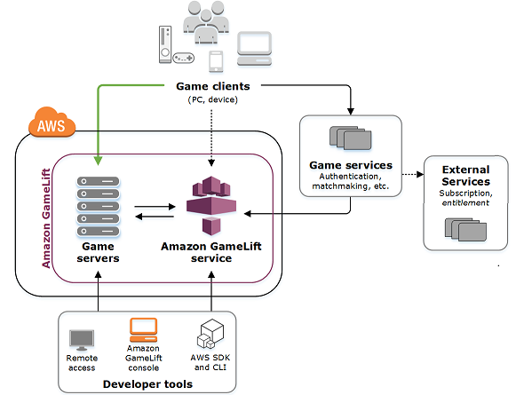

Games as a service
Cloud Computing: Servicios y Aplicaciones
Freddy Javier Frere Quintero
¿Qué es juegos como servicio?
Los juegos como servicio "GAAS" representan la provisión de videojuegos o contenido de juegos en un modelo de ingresos continuo, similar al software como servicio.
Son formas de monetizar los videojuegos ya sea después de su venta inicial, o para apoyar un modelo gratuito
Monetizar, es el proceso mediante el cual un producto de videojuego devuelve dinero para aquellos involucrados en su creación o propiedad de derechos de autor.
No se trata solo de cómo se juegan los juegos, sino también de cómo se desarrollan, implementan y mantienen.
GaaS Permite el acceso a los juegos se proporciona por suscripción.
El software del juego real se almacena en los servidores de la empresa de alojamiento y se transmite directamente al dispositivo del jugador a través del códec de video.

¿Cómo funciona GaaS?
GaaS es popular entre los editores de juegos, y hay muchas compañías de hospedaje de juegos basadas en la nube que brindan servicios de transmisión de juegos.
Aumenta la disponibilidad de juegos para los jugadores, permitiendoles jugar múltiples “Juegos” a la vez sin instalarlos.
Se puede reproducir “Juegos” AAA con calidad de consola sin hardware especializado, ya que los servicios de GaaS descargan todo el procesamiento gráfico en los servidores de la nube y se transmiten directamente a su TV u otros dispositivos.
Ejemplos:
GameFly, transmite juegos para televisores inteligentes Samsung, Amazon Fire TV y LG WebOS 3.0 Smart TV.
PlayStation Now,ofrece servicios de transmisión de juegos para dispositivos Sony como PS4, PS3, PS Vita y PS TV.
 |
 |
GAAS
Suscripciones de juegos
Servicios de suscripción de juegos
Juego en la nube / juego bajo demanda
Suscripciones de juegos
Muchos juegos en línea de multijugadores masivos (MMO) usan modelos de suscripción mensual.
Sirve para costear los servidores usados para ejecutar los juegos, personal que administra y actualiza con nuevos contenidos los juegos.
Varios MMO ofrecen un período de prueba inicial.
Servicios de suscripción de juegos
Los servicios de suscripción otorgan a los suscriptores acceso completo a una gran biblioteca de juegos que se ofrece digitalmente sin limitaciones.
El usuario debe descargar estos juegos en su computadora o consola local para jugar.
El usuario debe permanecer suscritos para jugar estos juegos; Estos están protegidos por la administración de derechos digitales que requiere una cuenta activa para jugar.
 |
 |
Juego en la nube / Juego bajo demanda
Permiten a las personas jugar juegos que se ejecutan en servidores remotos en dispositivos locales.
Elimina la necesidad de hardware de consola especializado o potentes computadoras.
Necesitamos conectividad a Internet.
Empresas que ofrecen Game As A Service
AWS

AZURE

NVIDIA GRID

flying wisdom


Entre otras


Juego en la nube / juego bajo demanda
Servicios de juegos en la nube

Sistemas de juego en la nube

Conclusiones
Games as a Service es una forma diferente de pensar en la industria de los juegos y se relaciona más con la forma en que se desarrollan, implementan y operan los juegos.
El término encapsula un modelo de implementación del lado del servidor donde la funcionalidad se aloja centralmente y se pone a disposición de las masas a través de interfaces fáciles de usar (API y SDK). Sin embargo, encapsula más que la implementación de software, también encapsula los modelos comerciales que sustentan la forma en que se proporciona. El término 'como servicio' implica un modelo de utilidad donde las personas pagan a medida que avanzan y pagan en función de lo que utilizan.